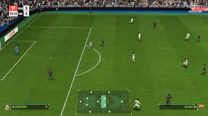

FIFA 25 es el próximo título de la famosa franquicia de videojuegos de fútbol desarrollada por EA Sports. Aunque al momento de mi última actualización en 2025, FIFA 25 aún no ha sido lanzado, se espera que continúe la tradición de entregar una experiencia de simulación de fútbol realista y detallada, manteniendo la esencia de la saga que ha sido un referente en los videojuegos deportivos durante más de dos décadas.
¿Qué esperar de FIFA 25?
Aunque aún no se han revelado detalles completos sobre el juego, es probable que FIFA 25 continúe evolucionando y aprovechando las capacidades de las consolas de nueva generación (PlayStation 5, Xbox Series X|S) y las PC de alto rendimiento. Algunas de las expectativas comunes para esta entrega incluyen:
Gráficos Mejorados, Jugabilidad Más Realista, Modos de Juego Ampliados
